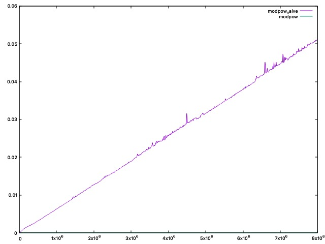
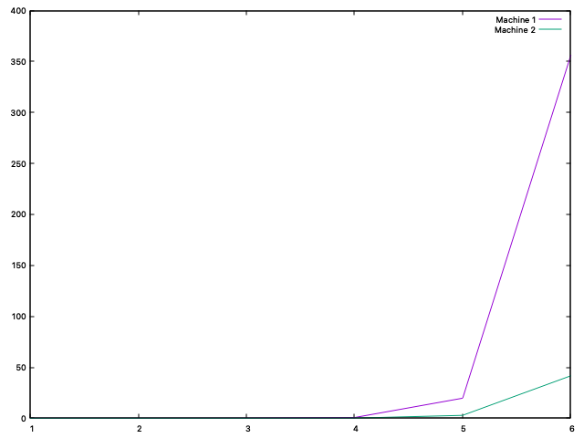

Le but de ce projet est de créer des outils qui serviront à simuler une élection.
La documentation est disponible sur github (une fois rendu publique) ou dans le fichier ./docs/index.html
Compilation
! attention : les commandes de test et de build peuvent ne pas fonctionner si il y a des espaces dans le absolute path.
ou clean build
Tests
Pour vérifier les fuites de mémoire :
Pour voir les tests de performance :
Il peut être préférable de faire make clean avant de compiler les deux dernières options.
Choix de structure
- Afin d'avoir une meilleure arborescence nous avons choisit, d'une part de séparer les différents fichiers. Les fichiers définissant les structures et les fonctions de manipulation de ces dernières sont présentes dans
/lib. Tandis que les jeux de tests sont générés dans/test. Ca devient vite pratique quand on a pleins d'exécutables. - Nous avons d'ailleurs choisi d'utiliser __
Doxygen__, outil très utile pour faire de la documentation. Les fichiers qui permettent de générer la doc sont contenus dans/docs. - Le projet contient plusieurs fichiers __
Makefile__, un principal, et d'autres dans différents dossiers (libettestpour l'instant). Cela nous permet depuis un makefile principal, de séparer les tâches, mais surtout de pouvoir accéder à des fichiers qui peuvent être contenus dans des dossiers différents. A titre d'exemple, les fichiers de tests font appel aux fichiers deliblors de la compilation. Ainsi on a une structure très flexible. Dès qu'on veut rajouter un nouveau fichier, il suffit de le spécifier dans son makefile localement, sans avoir besoin de le donner dans le makefile principal(qui sinon serait trop rempli et illisible). On peut également, grâce à cette structure exporter des variables. C'est le cas avec le file directory qu'on exporte et qui est accessible par les makefiles des sous-dossiers ou encore la constanteC_INCLUDE_PATHqui nous permet d'écrire des chemins absolus a partir de tout fichier faisant partie du projet. /assignementcontient notre rapport et le sujet du projet./datacontient des fichiers générés lors des tests.- Pour les tests, nous avons défini dans test.h des fonctions qui vérifient le résultat d'un appel à une fonction.
- TEST_SECTION() annonce le début d'un jeu de test dont on donne le nom en paramètre.
- TEST_SECTION_END() annonce la fin du jeu de test en cours.
- TEST() et TEST_MSG() vérifient si le résultat attendu est bien obtenus par la fonction donnée en paramètre. Dans le cas d'un succès, un compteur de succès est incrémenté, sinon un compteur d'échec est incrémenté. A chaque appel à une des 2 fonctions un compteur général est incrémenté.
- TEST_SUMMARY() fait le bilan du dernier jeu de test : le nombre des tests réussis et échoués.
- Vérification de la présence d'overflow. Dans
overflow.hon définit des fonctions qui vérifient si une opération(addition, multiplication ...) va causer un dépassement. La raison de cette implémentation vient du fait que des entiers trop grands peuvent amener à des mauvaises clés. Ce problème est détaillé dans la partie 1. - Redéfinition des types standards. On a fait le choix d'utiliser nos propres typedef au lieu des types standards. Ce choix vient du fait que nous avons voulu augmenter la taille des entiers pour permettre l'utilisation de plus grandes clés lors du chiffrement. Plus particulièrement , nous avons renommé les types pour les raisons suivantes:
- Par simplicité, afin de réduire la taille(du point de vue du lecteur) des types. Le type equivalent
uint64est beaucoup plus lisible queunsigned long long long ... long int. - (nombre de bits plus clair) le nombre des bits utilisés en mémoire pour chaque type est beaucoup plus facile à lire. En effet ce nombre fait partie du nom du type ce qui par consequent nous evite de verifier la taille d'un
unsigned long intoushort intsur internet et ainsi réduit les erreurs.
- Par simplicité, afin de réduire la taille(du point de vue du lecteur) des types. Le type equivalent
- Dans ce projet on utilise des fonctions intermédiaires. C'est le cas pour les fonctions finissant en
_raw. Ces dernières ne copient pas les arguments passés en paramètre et permettent directement d'initialiser des objets. Par exemple :init_protected_raw()etinit_protected(). La dernière copie les arguments puis appelle la fonctionrawpour initialiser.
Partie 1
Dans cette première partie nous nous intéressons au chiffrement et déchiffrement d'un message à l'aide du protocole RSA. Dans le premier exercice on implémente des fonctions permettant de calculer des nombres premiers dont le test de Miller-Rabin. Dans l'exercice suivant, on utilise les fonctions précédentes pour déterminer des clés publiques et privées grâce à l'Algorithme d'Euclide.
Exercices 1 et 2
Q1.1
Dans le cas où p est premier, c'est-à-dire le pire cas, la complexité de __is_prime_naive()__ est O(p).
Q1.2
Le plus grand nombre premier qu'on parviens a verifier avec __is_prime_naive()__ en moins de 0.002s est 5279.
Q1.3
La complexité de __modpow_naive(a, m, n)__ est O(m).
Q1.5
Pour les 2 fonctions, les temps sont très faibles même pour des grands m. La courbe de __modpow_naive__ est bien linéaire et correspond bien a la complexité de O(n). La courbe de __modpow__ est négligeable devant celle de __modpow_naive__ et ne dépasse jamais 0.0001s
Exemple:
| Values (a, m, n) | modpow_naive | modpow |
|---|---|---|
| (9435000329, 16, 1093) | 0.000001 sec | 0.000001 sec |
| (160986, 134217728, 25000) | 0.817935 sec | 0.000001 sec |
| (9435000329, 134217728, 1093) | 1.491000 sec | 0.000001 sec |
Graphe d'execution de
modpowetmodpow_naivepour a = 1234 (la base), n = 667 (le module) et m (l'exposant) de 1 à 8000000 par pas de 10000


Graphe d'execution de
modpowetmodpow_naivepour a = 123456789 (la base), n = 66666 (le module) et m (l'exposant) de 1 à 8000000 par pas de 10000
Q1.7
Parmi les valeurs de 2 a p-1, cad p-3 valeurs. On a une probabilité de 1/4 de ne pas tomber sur un témoin de Miller. De plus on effectue le test k fois avec remise (la fonction rand_long peut tomber deux fois sur la meme valeur). Autrement dit la probabilité ne change pas entre les lancers. Donc la probabilité de ne pas tomber sur un témoin de Miller pour k tests consécutifs est de (1/4)^k.
Rmq: Il serait préférable d'adapter notre fonction de tirage aléatoire pour qu'elle ne répète pas deux fois la meme valeur. Cela augmenterait la probabilité de tomber sur un témoin de Miller à chaque iteration consecutive et par consequent diminuerait celle de faire un faux positif pour un même nombre des tests k. Cependant il se trouve que le gain de cette altération serait négligeable devant la perte pour l'implementation de la fonction de tirage.
Jeu de tests
Les sets utilisés pour les tests de chiffrement sont générés aléatoirement. On implémente dans test/test.h des fonctions qui permettent de faire des tests simplement ainsi que lib/overflow.h pour detecter des overflows (voir la doc). Nous avons fournis un assez large set de tests, dont les résultats sont valides. Libre au lecteur de rajouter ses propres tests. Cela se fait très simplement avec un appel à TEST() ou tout simplement avec des printf.
Difficultés rencontrées
Nous nous sommes rendus compte, dans la fonction __generate_key_values()__, que certaines valeurs générées pouvaient causer des overflows et ainsi perturber le chiffrement/déchiffrement.
C'est le cas de l'argument n de cette même fonction. En effet, si n est trop grand, sa multiplication par lui-même peut causer un overflow. Et il en va de même pour le produit de certains nombres modulo n. Par exemple : x = (a % n) * (b % n) _(où a et b entiers positifs quelconques)_ peut dépasser la taille d'un entier.
Le problème vient du fait que n est ensuite utilisé pour l'exponentiation modulaire __modpow()__ et peut donc induire un mauvais chiffrement ou déchiffrement. Effectivement, si n a _"débordé"_, l'opération modulo n donnera un résultat non valide pour notre utilisation. Or n est calculé à partir du produit de p et q. Donc si p, q sont trop grands, p*q peut causer un overflow.
Pour empêcher cela, nous avons :
- Créé des runtime warnings dans les fonctions de base comme __
modpow_r__. - Créé des define qui vérifient si une opération entre deux entiers cause un overflow (voir
overflow.h). - Généré un nouveau couple
(p,q)d'entiers premiers tant qu'un overflow a eu lieu pendant la génération, ie tant quen = p*qest trop grand. _(Qu'on vérifie grace aux fonctions dansoverflow.h)_
Ainsi, on s'assure que le couple (p,q) ne cause pas d'overflow et qu'il permet bien de chiffrer/déchiffrer le message.
Partie 2
Dans cette partie, nous implémentons des structures qui permettront par la suite de générer des intentions de votes. L'un des objectifs est de rendre les déclarations de tous les participants uniques, de cette façon il devient impossible de voter à la place d'une autre personne sans sa clé secrète (dont on supposera qu'elle n'est jamais transmise). Ici pas de questions auxquelles répondre, donc on va plutôt faire une présentation de notre code, des choix de structures et des difficultés rencontrées. Et possiblement des tests de performance.
Exercice 3
Ici sont implémentées 3 structures(et leurs fonctions de manipulation) qui représentent :
- Tous les citoyens, ainsi que les candidats(1 clé publique et une clé privée) en utilisant une structure __
_Key__. - Les signatures(tableau de
long), qui permettent d'attester de l'authenticité d'une déclaration. Dont la structure est ___Signature__. - Des déclarations, contenant la clé publique du votant, un message(clé publique d'un candidat), et une signature. C'est représenté par la structure __
_Protected__.
Tests
Les jeux de tests de cet exercice sont disponibles dans test/rsa.c et test/sign.c.
key_to_str()etstr_to_key(): les tests sont effectués dans une fonctiontest/test_key_str_conversion(), on vérifie la conversionKey->string->Key.- De même pour
signature_to_str(),str_to_signature()etprotected_to_str(),str_to_protected(). - On vérifie que la signature est valide avec
verify()pour laquelle on génère un set aléatoire de clés.
Exercice 4
Cet exercice est une application directe des fonctions définies dans l'exercice 3. Avec generate_random_data(), on simule une élection et on sauvegarde les résultats dans 3 fichiers txt contenus dans /temp.
Nous avons fait attention à ce qu'il ne soit pas possible qu'un citoyen soit plusieurs fois candidat, ce qui est possible quand on fait plusieurs tirages aléatoires dans une liste.
Nous ferons des tests pour vérifier que la sauvegarde des données s'est bien déroulée dans la partie 3 dans laquelle sont définies des fonctions de lecture.
Partie 3
Ici on implémente des fonctions de lecture et des structures qui peuvent stocker le contenu des _.txt_ générés précédemment. Concrètement on a défini des listes chaînées pour les structures ___Key__ et ___Protected__. Lors de la lecture d'un fichier texte on ajoute en tête d'une liste chaînée chaque clé lue(après l'avoir convertie en clé bien sur).
Exercices 5 et 6
Q6.7 compute_winner
Ici on veut utiliser toutes les fonctions précédentes et celles de manipulation de table de hachage pour simuler une élection. Pour ce faire, on dispose dans ./test/vote.c d'un main qui génère des données avec generate_random_data(). Cette partie là ne vérifie pas si le gagnant retourné est le bon pour le dernier batch généré. En revanche, juste au dessus de cette partie, on met en place un test pour vérifier la validité de la fonction. Concrètement, on utilise des votes 'faits main' dont on connaît le résultat à l'avance. Ces fichiers texte sont stockés dans ./test/compute_winner_data. Comme la tâche est fastidieuse, nous n'avons des fichiers texte que pour une simulation seulement, mais le résultat n'en reste pas moins valide.
Tests
Dans l'exercice il est demandé de vérifier que read_public_keys() puis print_list_keys() donnent les mêmes clés que dans keys.txt. Faire des tests pour comparer des strings n'aurait pas beaucoup d'intérêt ici. En effet, pour faire les tests il faudrait redéfinir une autre fonction de lecture qui ferait exactement la même chose que celles demandées, qui serait alors elle aussi sujet à de potentielles erreurs. De plus les tests de conversion de clés on déjà été effectués plus tôt, les refaire ici serait redondant. Cependant, en affichant le résultat de __print_list_keys()__ on observe que la lecture puis conversion s'est bien déroulée. Pour s'en convaincre, ces clés sont affichées lors d'un appel à make test.
Pour les Q5.8 et Q5.9 dont les fonctions associées sont read_protected() et print_protected_list(), les tests sont présents dans test/dataio.c.
Résumé
Dans ces trois grandes parties nous avons développé des outils qui nous permettent de chiffrer/déchiffrer des messages. Pour cela nous avons utilisé le protocole RSA et les algorithmes permettant de générer des clés publiques et privées. Ces dernières sont l'élément clé _(ahah)_ de notre simulation d'élection car nécessaires quand on veut créer un message unique et identifiable, de sorte qu'il est impossible d'usurper une autre personne(en considérant que les clés sont gardés bien secrètement).
Partie 4 et 5 : Blocks et persistance des données
Ici commence l'implémentation de la blockchain. Contrairement au système précédent dit centralisé, qui stockait directement toutes les données au même endroit sans aucun intermédiaire, ici on veut construire un système plus sûr. On veut permettre à n'importe quel citoyen de pouvoir vérifier la validité des déclarations et de les soumettre lui-même. Ainsi chaque citoyen possède une copie de la blockchain, mais la modification est une tâche coûteuse. Ce système permet d'empêcher les fraudes, en effet un citoyen seul ne peux pas modifier la blockchain assez rapidement car tous les autres citoyens soumettent continuellement de nouveaux blocks. Or par défaut, on choisit toujours la chaîne la plus longue, et le fraudeur, n'a pas le temps de suivre ces mises à jour
Choix par rapport a la separation de block_to_str
On a choisi de séparer char* block_to_str(const Block* b) en deux appels aux fonctions void block_nonce_to_str(char* headstr, const Block* b) et char* block_head_to_str(const Block* b). La raison est que cela permet d'optimiser la fonction void compute_proof_of_work(Block *B, int d), notamment cela nous permet de régénérer uniquement la partie du string de Block qui change quand nonce change et par consequent réduit considérablement le temps d'execution d'une itération de la boucle.
Q7.8
On présente ici un petit test de performance pour la fonction compute_proof_of_work(). Voici les résultats de la fonction, exécutée sur 2 machines différentes :
remarque : ces résultats sont obtenus en faisant une moyenne. Pour chaque valeur du nombre de zéros, on fait 5 tirages et on sauvegarde la moyenne.
| nombre des zeros | temps d'executions machine 1 (en secondes) | temps d'execution machine 2 (en secondes) |
|---|---|---|
| 1 | 0.000199 s | 0.000242 s |
| 2 | 0.000636 s | 0.000138 s |
| 3 | 0.057216 s | 0.001386 s |
| 4 | 0.692197 s | 0.164597 s |
| 5 | 19.679282 s | 2.860631 s |
| 6 | 356.074466 s | 41.651560 s |
machine 1 : Intel Core i7 8th gen (Mobile)
machine 2 : Apple M1
Enfin, on remarque qu'à partir de 5 zéros, le temps dépasse 1 seconde. Réponse : 5. Les 2 prochains graphes illustrent les résultats. On remarque bien une augmentation exponentielle du temps d'exécution, pour 6 zéros le temps augmente considérablement.

Temps d'exécution en fonction du nombre de zéros.
Q 8.8
La fonction CellProtected* fuse_protected_lists(CellProtected* A, CellProtected* B) est en O(N) où N taille de A On pourrait avoir une fonction en O(1) si notre liste était doublement chaînée
Q 9.6
Le code de cette question se trouve dans le ficher test/question96.c
Q9.7
Oui, l'utilisation d'une blockchain est intéressante pour une élection. Elle permet une meilleure transparence sur le processus d'élection. De plus nous avons vu que la fraude est presque impossible. En revanche les failles ne sont pas inexistantes.
Le problème avec la blockchain et le système de consensus que nous avons utilisé (le proof of work) est qu'il est difficile de choisir le bon nombre de zeros.
- si ce nombre est trop élevé, nous nous limitons a un nombre de votes par seconde tres petit. Cela pourrait causer des problèmes notamment pour un système de vote. Par exemple, si on prend le nombre de transactions par seconde du bitcoin qui est de 4.6, nous pouvons estimer qu'il faudrait 156 jours à la france pour effectuer une élection.
- au contraire si on diminue trop le nombre de zeros il devient trop facile de commettre des fraudes pour des groupes malveillants possédant suffisamment de puissance de calcul.
Un autre problème existe dans l'élection. Puisque on considère toujours la chaîne la plus longue, lorsque l'élection approche la fin, il est beaucoup plus facile de frauder car maintenir une chaîne devient plus simple. Imaginons qu'il ne reste plus que 2 minutes avant la fin de l'election. Alors maintenir une chaîne frauduleuse n'est pas très compliqué. Il faudrait peut être limiter les ajouts de blocks quand la fin de l'élection approche.
Conclusion
Quand bien même, lors de ce projet, nous avons eu l'occasion d'expérimenter de nouvelles choses, d'apprendre de nouveaux concepts, et de sortir un peu la tête des livres de cours.